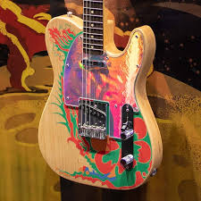
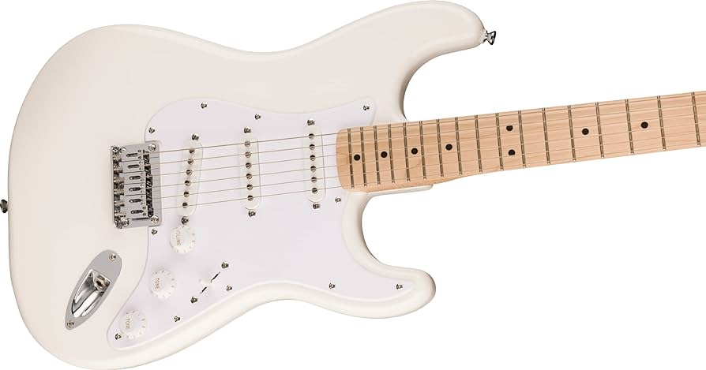
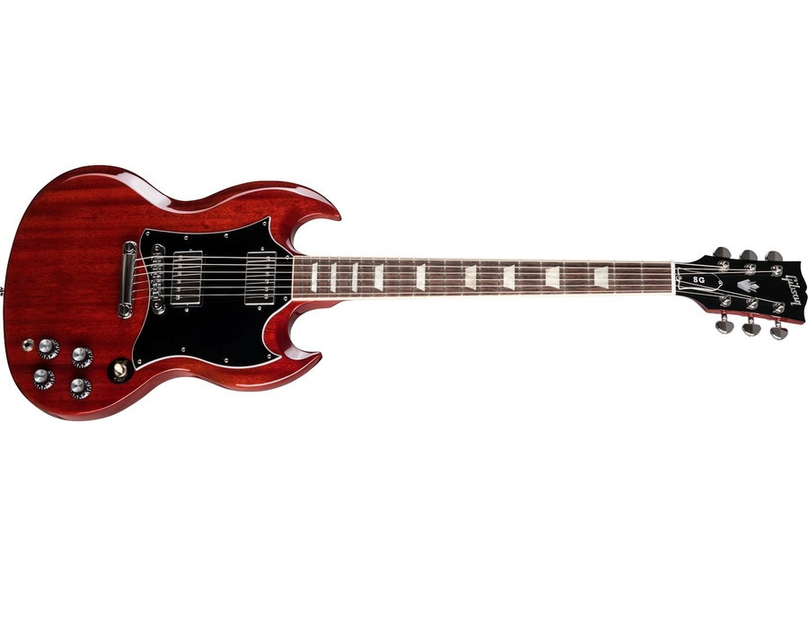
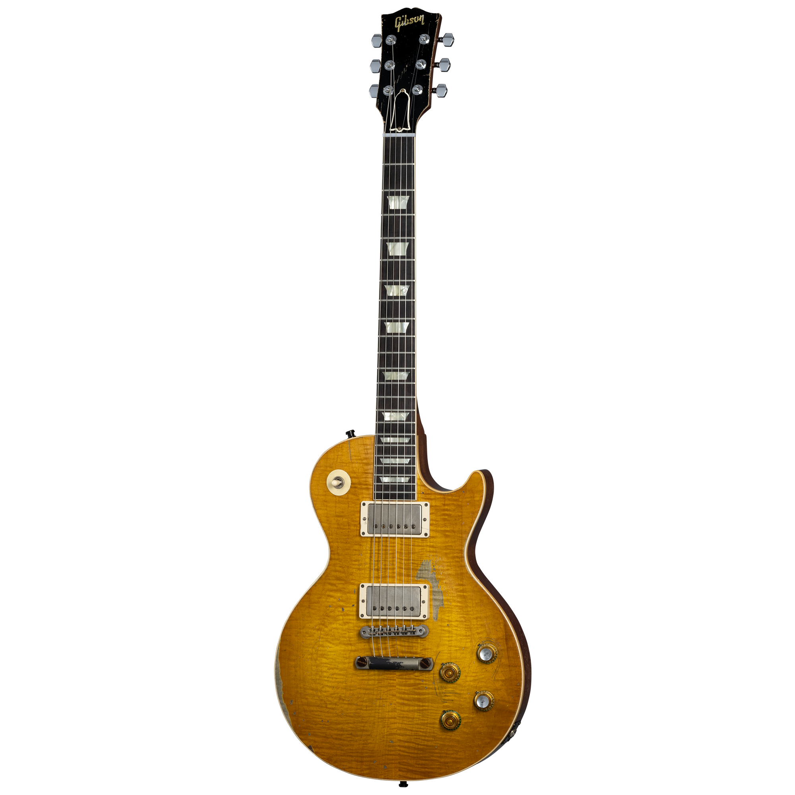

Types of Guitars
Fender Telecaster
The Telecaster is known for its bright and cutting tone. Telecasters are found throughout all of music but it is specifically known for country (The telecaster in the image is Jimmy Page's telecaster from 1959).
Fender Stratocaster
The stratocaster is the most popular electric guitar in the USA known for is versatility and its slick contoured body. It features three single-coul pickups and is used in every genre of music (The strat above is John Lennon's).
Gibson SG
The Gibson SG is a common electric guitar known for its aggressive tone, lightweight, and its beautifully crafted symmetrical design. Its dual-humbuckers makes it a great tone for anything that uses a heavier tone like rock, metal, or blues.
Gibson Les Paul
The Les Paul was the first electric guitar and it stands the test of time holding its place as one of the most famous guitars for all musicians. Its warm and thick tone provided by the dual-humbuckers makes one of the best guitars for anything that rocks (The one in the picture is Kirk Hammett't Les Paul).